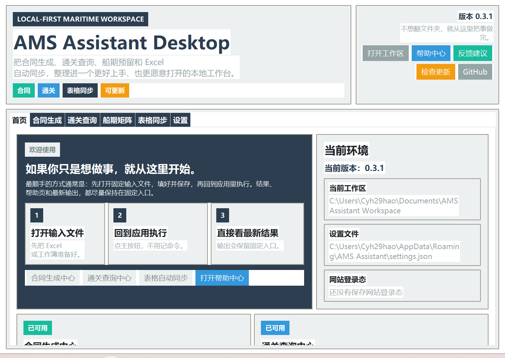

一个界面里完成日常动作
桌面版已经把固定输入、结果入口、帮助页、反馈入口和更新检查放到同一个工作台里。

AMS RELEASE ENTRY
Desktop Release v0.4.0Assistant for Maritime Service 把合同生成、通关查询、表格自动同步和后续船期能力， 收进同一个更容易交付、更容易验收的本地桌面应用里。
当前版本已经提供桌面 GUI、功能级帮助中心、真实截图说明、反馈入口和检查更新能力。 普通用户可以从 release 直接下载使用，不需要先理解代码结构。
桌面版已经把固定输入、结果入口、帮助页、反馈入口和更新检查放到同一个工作台里。

如果你只想用，不想折腾文件和代码结构，最顺手的路径就是下载桌面版、打开帮助中心、按截图做。
进入快速开始 反馈建议到 cyh29hao@sjtu.edu.cnQUICK START
这部分优先面向普通使用者，尽量简单、直接、不要求先理解技术背景。
打开 GitHub Releases，下载最新桌面版压缩包并解压到一个固定位置。
双击 `1-启动AMS桌面应用.bat`，进入统一 GUI，然后按功能入口选择合同、通关、同步或船期。
每个功能都可以单独打开图文说明页。普通用户不需要先研究脚本入口，也不需要自己拼命找文件夹。
FUNCTIONS
每个模块都对应一个明确的业务结果，方便普通用户直接选功能，不需要先理解内部实现。
Module A
从业务表格自动生成 Word 合同，减少手工改模板、补红字和复制粘贴的步骤。
Module B
保存网页登录态，查询放行状态，并自动把结果回填到业务工作簿。
Module C
预留给后续的船期表与港区矩阵流程，先把产品入口、工作区和帮助结构搭好。
Module D
监控源 Excel，按配置把指定列和指定区域自动写入目标 Excel，减少重复复制粘贴。
RELEASE NOTES
如果你是普通用户，请优先下载桌面版 release，而不是先碰源码仓库。
FAQ
如果你只是想用，请下载 release。源码仓库更适合维护、继续开发和审阅实现方式的人。
当前桌面版已经按“程序本体”和“用户数据”分离，目标就是让版本更新尽量不丢工作区、设置和登录态。
因为业务里涉及 Word、Excel、网页登录和敏感数据，本地桌面应用更贴近真实操作，也更容易保留文件与账号边界。
DEPLOYMENT
这一部分面向需要复制页面、维护页面或继续接本地工具的人，因此信息会更详细一些。
最推荐的方式。适合真正要使用合同、通关和同步能力的人。
适合把这个仓库作为公开入口页、产品说明页或团队展示页的人。
git init
git branch -M main
git add .
git commit -m "Deploy AMS site"
git remote add origin YOUR_REPO_URL
git push -u origin main
适合要继续扩功能、补工作流、调更新链路和维护 release 的人。
RECOMMENDED PATH
GitHub Releases 负责下载，桌面应用负责执行，GitHub Pages 负责说明。 这样既方便传播，也方便每个人真正落地使用。
ROADMAP
先把已有桌面流程做稳，再继续扩更完整的海事业务工作流。
把预留入口做成真正可验收的业务流程，补齐当前最后一块未落地的业务能力。
继续加强多文件、多任务、失败重试和操作日志，让普通用户更少需要看文件结构。
继续打磨安装、升级、反馈和配置保留，让它更像一款稳定的本地业务工具。
NEXT
体验中的不顺手、看不懂、找不到结果、按钮想法，都可以直接反馈到 cyh29hao@sjtu.edu.cn。